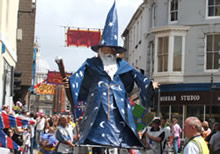

Penzance & Newlyn Festivals
Golowan Festival & Mazey Day
For more deatailed information about the Golowan Festival, visit West Cornwall Events
 The golowan festival (Cornish for midsummer) is the festival of St John held in Penzance each year in late June. Although it is an old tradition, it was not practiced in the area until 1991 when a group of artists and local schools revived the celebration in order to remember the local area heritage. The festival is ten days long, culminating in the Mazey weekend and notably mazey day on the Saturday.
The golowan festival (Cornish for midsummer) is the festival of St John held in Penzance each year in late June. Although it is an old tradition, it was not practiced in the area until 1991 when a group of artists and local schools revived the celebration in order to remember the local area heritage. The festival is ten days long, culminating in the Mazey weekend and notably mazey day on the Saturday.
Golowan was one of the last mid summer festivals practiced in Cornwall. In the 1890’s, the Penzance government outlawed the festival due to the rising insurance premiums for the towns business community. Traditionally the towns streets were lined with alight tar barrels which were paraded around. The surrounding hills had bonfires set at the top, throwing dancing shadows all around mounts bay and beyond.
The modern Golowan is arguable a little less dangerous. The celebration of the area arts and culture attracts tens of thousands of visitors to the area from local towns and as far as the Asian continent and further. The core of the celebrations is Mazey day, when the streets are filled with market stalls and entertainers, and the towns school children parade up and down market jew street starting at st. johns hall holding aloft large paper mache and wicker creations. It truly is a sight to behold, with some figures being larger than the building around them. The weekend begins with mazey eve and ends with the quay fair.
- Mazey eve – Penglaz, the Penzance obby oss is set loose around the quay area, leading a procession of dancers and musicians. There is a fair held next to jubilee pool and there is many music events in the surrounding area, including a large music tent at the quay.
- Mazey Day – centres around the parades and other street events in the centre of town.
- Quay fair – stalls and musical events are held on the quay front. This day has a much more laid back feel to it, and is an ideal day to be part of the celebrations.
Newlyn Fish Festival
For more deatailed infor about the Newlyn Fish Festival, visit West Cornwall Events
The Newlyn fish festival is held every year on the late august bank holiday, and celebrates Newlyn's, and indeed Cornwall's, long fishing culture and heritage. Held in the port area of Newlyn's sea front, the celebrations include stalls, fishy demonstrations, open vessels, demonstrations by the RNLI and entertainment from singers and musicians alike.
The festival was started in 1991 by Len Scott who wanted to promote and protect the area local areas fishing industry. The proceeds from the festival are given to the Fisherman's mission, who help the family's of fishermen who were injured or lost at sea. So far the festival has been blessed with nothing by fine weather over the years, a tradition which all hopes will continue long into the future.
Find out more about the Newlyn Fish Festival
Montol Festival
For more deatailed infor about the Montol Festival, visit our Events Page
The winter solstice (Cornish: montol) is celebrated by Penzance and the surrounding towns and villages yearly in December. The towns people are encouraged to wear masks and fancy dress. Much like the Golowan festival, the celebrations last 10 days, culminating at the weekend with montol eve, lantern parades through the streets and a beacon at the leskudjack castle. Find out More